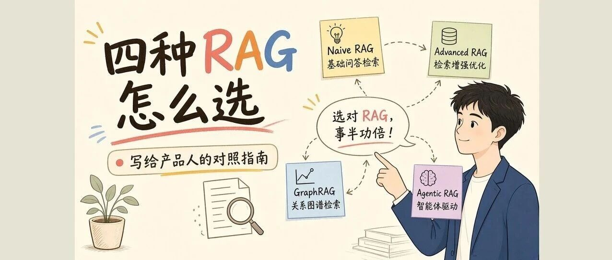
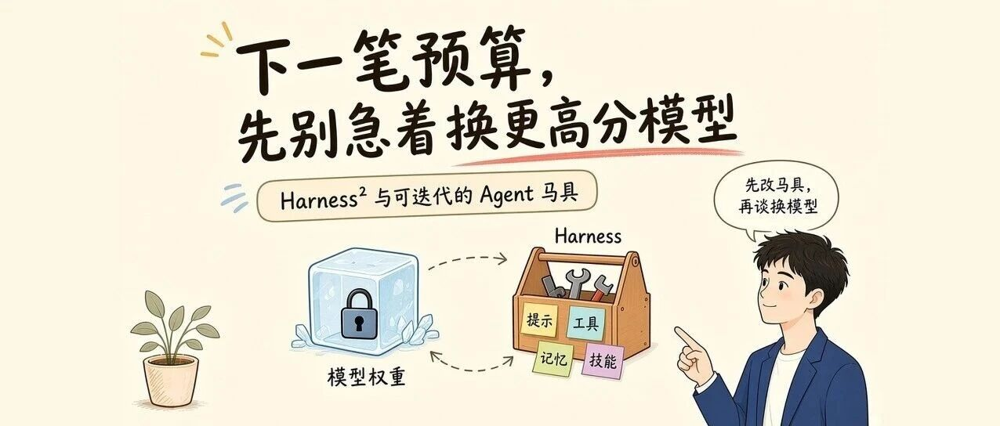
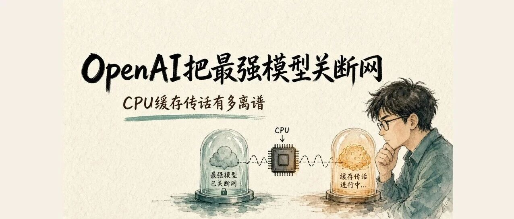
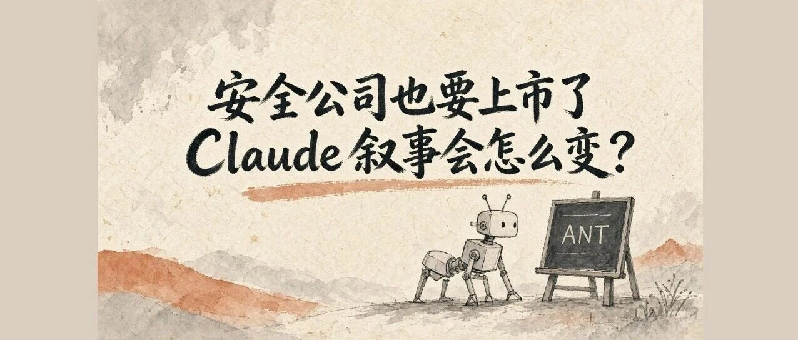
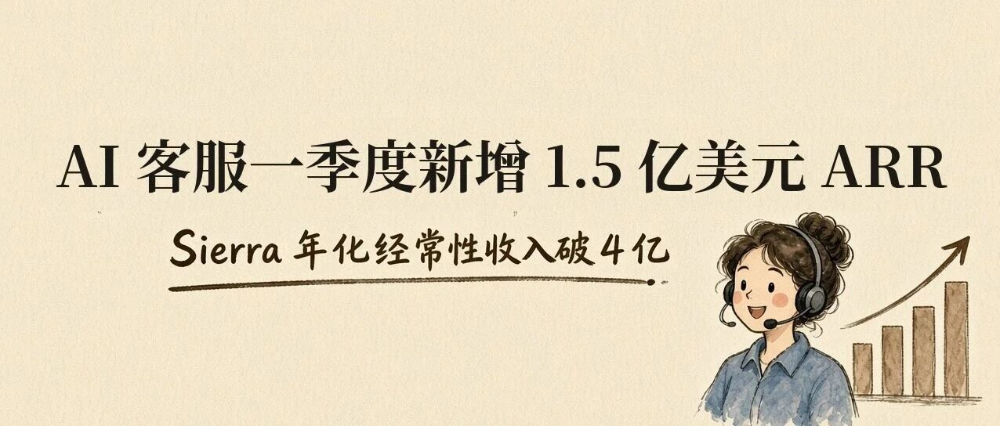

关注方向
从问题走向作品
内容会随着实践持续更新。
〉 ./open-portfolio.sh
正在初始化 LMQ OS [ 完成 ]
正在加载项目、工具与文章 [ 完成 ]
身份：刘闽秦 / AI 产品经理
让 AI 能力，成为可落地的产品。
内容会随着实践持续更新。
这里将记录我参与或独立完成的 AI 产品实践。
后续可补充项目背景、我的职责、关键决策、产品截图与结果数据。
这里将按真实使用场景整理工具、技能与方法论。
用户访谈、问题定义、竞品分析
产品策略、原型设计、人机协作
指标设计、效果评测、持续优化
围绕 AI 产品、模型能力与行业变化的公开记录。点击卡片阅读公众号原文。

从产品视角对照四种 RAG 路径，帮助判断不同场景下该怎么选。
阅读原文 ↗
从 Harness² 开源出发，重新理解模型分数之外的产品价值。
阅读原文 ↗产品视角看 Kimi K3.1 Pro：入口、评测、长任务案例与能力取舍。
阅读原文 ↗
一次极端实验背后，模型能力边界与信息通道的产品启示。
阅读原文 ↗
从 Anthropic 的公开动作，观察安全定位与商业叙事的变化。
阅读原文 ↗围绕电脑操作型 Agent 的成本变化与产品竞争展开观察。
阅读原文 ↗千问 AI 眼镜升级通话与媒体翻译，AI 硬件体验继续演进。
阅读原文 ↗
从 Sierra 的增长数字，观察企业 Agent 市场的商业化速度。
阅读原文 ↗